Zennの「frontend」のフィード
フィード
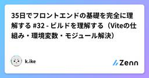
35日でフロントエンドの基礎を完全に理解する #32 - ビルドを理解する（Viteの仕組み・環境変数・モジュール解決）
Zennの「frontend」のフィード
この記事で学ぶこと#31 では、コード分割のところで「await import(...) を切れ目に、Vite がビルドで別ファイルに分ける」とさらっと書きました。今回はその「ビルド」の中身を開けます。ここまで npm run dev や npm run build を呪文のように打ってきましたが、その裏で何が起きているのかを知らないと、環境変数がブラウザに漏れる事故や、import のパスが解決できないエラーで足を止めます。今回からが最後のPart「開発基盤と総仕上げ」です。自分の書いたコードが、どう加工されてブラウザに届くのかを、全部実測で確かめます。開発（dev）と本番（...
8時間前
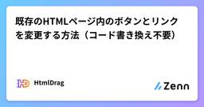
既存のHTMLページ内のボタンとリンクを変更する方法（コード書き換え不要）
Zennの「frontend」のフィード
ダイレクトアンサー（TL;DR）：ソースコードの手動書き換えやページ全体の再生成を行うことなく、既存のHTMLページ内のボタンやリンクを変更するには、以下の4ステップのインプレース・ビジュアル編集ワークフローを採用します：**ページ全体の導線（アクションエントリー）を監査する：**ヘッダーナビゲーション、ヒーローエリアのメインCTA、フッターの問い合わせ先など、変更すべきリンク先と維持すべきページ内アンカーを整理します。**既存のHTMLファイルを読み込む：**単体のHTMLファイルをビジュアルキャンバスに直接読み込み、既存のフォント、ボタンの内側余白、周囲のレイアウトを維持した...
1日前
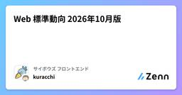
Web 標準動向 2026年10月版 1
1
Zennの「frontend」のフィード
こんにちは！ サイボウズ株式会社 プロダクトエンジニアの くらっち (@kuracchi04) です。 はじめにサイボウズは 2025 年 4 月より、W3C のメンバーに加入しました。https://blog.cybozu.io/entry/joining-w3c標準化プロセスに関わることができるようになるための最初の一歩として、フロントエンドエンジニアの一部のメンバーは積極的に Web 標準のキャッチアップを行っています。そこで、毎月メンバーが興味を持った Web 標準に関する話題や、実際に標準化プロセスに関わることができた場合にはその報告などを 1 つの記事としてまとめ...
1日前
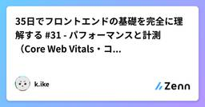
35日でフロントエンドの基礎を完全に理解する #31 - パフォーマンスと計測（Core Web Vitals・コード分割・エラー監視）
Zennの「frontend」のフィード
この記事で学ぶこと#30 では、XSSをVueがどこまで自動で防ぎ、どこに自分で穴を開けてしまうかを実測しました。ここまでで「正しく動く」「安全に動く」フロントエンドを見てきました。残る軸が「速く動く」です。ただし速さは、やみくもに手を入れても良くなりません。凄腕エンジニアは必ず先に測ります。どこが遅いのかを数値で特定してから、効く手だけを打ちます。今回は、速さを測る物差し（Core Web Vitals）、一番効く代表的な手（コード分割）、そして本番で起きたことを見張る仕組み（エラー監視）を、全部実測で確かめます。Core Web Vitals の3指標（LCP・INP・CL...
1日前
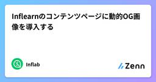
Inflearnのコンテンツページに動的OG画像を導入する
Zennの「frontend」のフィード
こんにちは、Inflabのフロントエンド開発者、Yoongdyです。最近、Inflearnのユーザーの皆さんが心を込めて書いてくださった受講レビューや質問&回答のページをSNSでシェアしたときに真っ先に目に入るリンクプレビュー画像が、以前と変わったことにお気づきの方はいらっしゃるでしょうか？まだ気づいていない方は、この記事を読む前に、ご自身がInflearnに投稿した自慢の受講レビューや質問&回答をSNSでシェアしてみてください。この記事をより楽しく読んでいただけるはずです。それでは、OG画像を動的に生成する仕組みを開発する中で得た経験を共有していきます。始める...
1日前
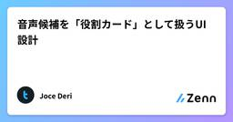
音声候補を「役割カード」として扱うUI設計
Zennの「frontend」のフィード
音声候補を「役割カード」として扱うUI設計本稿は公開画面から考えるUI設計メモである。特定サービスの内部実装、生成品質、権利判定、実際の審査フローを示すものではない。目的は、音声の再生可否と、共有する投稿カードの説明可能性を分けることだ。 音声単体ではなく、公開カードを単位にする共有時に見られるのは波形だけではない。最初のフレーム、タイトル、字幕、台本、短い開示文が一緒に見られる。そこで、候補名を単独の「完成品」として持つのではなく、場面上の役割と結びつける。type Role = 'setup' | 'turn' | 'aside&...
1日前
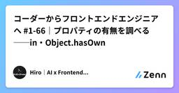
コーダーからフロントエンドエンジニアへ #1-66｜プロパティの有無を調べる──in・Object.hasOwn
Zennの「frontend」のフィード
はじめに前回の #1-65 では、ネストしたオブジェクトを ?. と ?? で安全に読む方法を見ました。そこで、1つ区別できないものがありました。**「キーはあるが値が undefined」と「キー自体が無い」**です。どちらも読むと undefined になるため、?. や ?? からは同じに見えます。多くの場面では、それで困りません。ただ、実務では「項目が送られてこなかった」のか「項目は送られてきたが空だった」のかを分けたい場面が、ときどき出てきます。今回は、キーが存在するかどうかを調べる2つの方法、in 演算子と Object.hasOwn を扱います。AI（Claude...
1日前
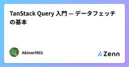
TanStack Query 入門 — データフェッチの基本
Zennの「frontend」のフィード
TanStack Query 入門 — データフェッチの基本 概要React でサーバーからデータを取得するとき、useEffect + useState で素朴に書くと、ローディング状態・エラー処理・キャッシュ・再取得を毎回手書きすることになります。これらは本質的にアプリ固有のロジックではなく、「非同期なサーバー状態をどう扱うか」という共通課題です。TanStack Query（旧 React Query）は、この**サーバー状態（server state）**の管理に特化したライブラリです。本記事では入門として、基本的なデータフェッチの書き方と、押さえておきたい考え方を整...
2日前
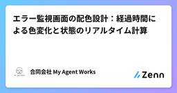
エラー監視画面の配色設計：経過時間による色変化と状態のリアルタイム計算
Zennの「frontend」のフィード
この記事では、エラー監視画面においてエラー発生からの経過時間で色を変え、状態をリアルタイムで計算して表示するための設計と仕組みを解説します。 この記事の要点エラーの経過時間に応じて色を変化させることで、エラーや対応状況を視覚的に表現できる。未対応のエラーが蓄積すると画面が常に赤く表示され続け、画面が汚れる原因となる。エラーの状態をリアルタイムで計算して色が変わり続ける仕組みを取り入れることで、画面が常に赤く表示されるのを防ぎ、人が確認する必要をなくす。 なぜエラー監視画面の配色が問題になるのか？エラー監視画面は、エラーが発生した時間の経過で色を変えることにより、エ...
2日前
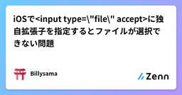
iOSで<input type=\"file\" accept>に独自拡張子を指定するとファイルが選択できない問題
Zennの「frontend」のフィード
はじめに開発中のサービスには独自の拡張子（以下 .example）を持つファイルを書き出し、それを他のユーザーにインポートしてもらうことでデータを共有する機能があります。ユーザーが誤ったファイルを選ばないよう、ファイル選択には次のように accept を指定していました。<input type="file" accept=".example">Chrome などのデスクトップブラウザでは問題なくインポートできていたのですが、ユーザーから「iPad だとファイルが何も選択できない」という報告がありました。この記事ではその原因...
2日前
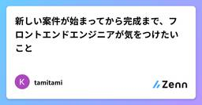
新しい案件が始まってから完成まで、フロントエンドエンジニアが気をつけたいこと
Zennの「frontend」のフィード
新しい案件では、画面を実装する前にも、資料の確認や見積もり、関係者との相談など、やることがあります。この記事では、初めてフロントエンドの案件に参加する人に向けて、説明を受けてからリリースするまでに気をつけたいことを整理してみます。 案件の説明を受けたら、資料を読んで全体を把握するまずは案件全体の資料に目を通し、自分の担当画面がサービスの中でどんな役割を持つのかを把握します。誰が使うサービスなのかも確認しておきたいです。SEOへの対応が必要か、どのブラウザや端末を対象にするかを考える手がかりになります。期限と、その日までに何を完成させる必要があるのかも確認しておきます。説明を聞...
2日前
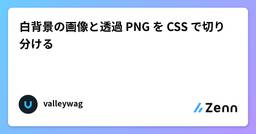
白背景の画像と透過 PNG を CSS で切り分ける
Zennの「frontend」のフィード
ダークテーマのカードに画像を置いたとき、四角い白背景が出る場合があります。原因を CSS と画像データに分けると、確認する範囲を小さくできます。ここでは、既存の画像コンポーネントを変える前に行う診断手順を整理します。 再現用の条件を固定する同じ画像を、白と濃いグレーの二種類のコンテナに表示します。幅は固定し、フィルター、影、ブレンドモードは外します。画像だけを別タブで開く確認も併用してください。白い矩形が画像について移動するなら、元データに不透明な背景が含まれている可能性があります。.preview { background: #243044; padding: 24px; }...
2日前
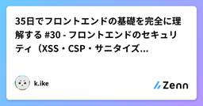
35日でフロントエンドの基礎を完全に理解する #30 - フロントエンドのセキュリティ（XSS・CSP・サニタイズ・依存の脆弱性）
Zennの「frontend」のフィード
この記事で学ぶこと#29 では、ログインの印（トークン）をどこに置くかを実測しました。そのとき「ページに悪意あるスクリプトが混入する攻撃（XSS）」という言葉が何度も出てきて、詳しくは今回、と先送りにしていました。今回はそれを正面から扱います。XSSはフロントエンドで一番多い脆弱性です。そして幸いなことに、Vue は既定でその大半を防いでくれています。何を自動で守ってくれて、どこに自分で穴を開けてしまうのか、全部実測して境界をはっきりさせます。XSSが「人の書いた文字を命令として実行させてしまう」攻撃だと、具体例で説明できるVue の {{ }} が自動でやってくれること、v...
2日前
Next.js 15から16へ Cache Components移行実践｜12件のエラーと検証・切り戻し
Zennの「frontend」のフィード
## こんな人のための本ですNext.js 15（App Router）の実務アプリを保守し、Cache Components への移行を任されたフロントエンドエンジニア向けです。`cacheComponents: true` でエラーが次々出て一度元に戻した、`cookies()` や `searchParams` のプリレンダリングエラーが腹落ちしていない、移行で本当に速くなるのか数字で知りたい、という人に届けたい内容です。## 実在のアプリを、実際に移行しました公式ドキュメントの要約ではありません。認証・検索・更新を備えた検証用アプリ（SQLite に商品200件・レビュー80件、cookie セッションによるログイン、Server Action によるレビュー投稿と在庫変更）を、Next.js 15.5.28 → 16.4.4 へ実際に移行した全記録です。- エラーは合計12件＋警告1件。エラーメッセージを逐語で収録し、出た順番と切り分け方を追えます。設定エラー6件のあと、プリレンダリングエラーは直すたびに1件ずつ表面化します。- 題材アプリのソースコードは、移行の節目を固定した4つの git タグ付きで配布します（取得手順は第1章）。配布先：https://github.com/200Ritsu/nextjs-cache-components-sample- 購入後に読める内容：ルート別の移行差分、`cacheTag` / `updateTag` による無効化の設計と事故パターン、Vitest 11件＋ Playwright E2E 4件のガードレール、切り戻し手順、Next.js 17 再検証リスト（付録）。## 実測の正直な内訳統制比較（Next 16.4.4 内・クリーンビルド・各3回）では、ビルド短縮の主因は Next 16 の Turbopack（約13秒）で、Cache Components 自体はビルドを1.5〜4.3秒むしろ遅くしました。TTFB は `/search` でフラグ ON 5.0ms vs OFF 15.1ms でした（検索結果の表示完了までの時間は測っていません）。計測はすべてローカルの `next start` に対して行い、測っていないことは「未検証」と明記します。検証環境：Next.js 15.5.28 → 16.4.
3日前
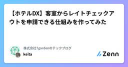
【ホテルDX】客室からレイトチェックアウトを申請できる仕組みを作ってみた
Zennの「frontend」のフィード
こんにちは。7gardenでテックリードを担当しているKeitaです。弊社で内製している客室向けのホテルインフォメーションシステム（以下、HIS）に、ゲスト自身がレイトチェックアウトを申請できる機能を追加しました。HIS はこれまで「ホテルからゲストへ情報を届ける」一方向のプロダクトだったのですが、今回初めて「ゲストからホテル側へ」の通信を持つ機能が乗ったことになります。この記事では、その背景と実装に加えて、HIS というプロダクトがどう一歩進んだのかという観点でもご紹介します。HIS の立ち上げ自体については以前の記事で書いているので、よろしければそちらもご覧ください。http...
3日前
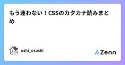
もう迷わない！CSSのカタカナ読みまとめ
Zennの「frontend」のフィード
英単語の読み方がわからず調べた回数は数えきれません。会話している時になんて読めばいいかわからず悩んだ回数は数えきれません。そんな日々とはおさらばしたい！なのでまとめました。!ここで紹介しているのは必ずしも英単語の正しい発音ではなく、日本人同士で伝わるであろう簡易的なカタカナ読みです。 CSS プロパティ・値表記読み方absoluteアブソリュートalignアラインanchorアンカーanimationアニメーションappearanceアピアランスaspect-ratioアスペクトレシオbackdrop...
3日前

AIエージェントの試行錯誤に「見た目が崩れていないか」の検査を組み込む 判定をLLMに任せない理由
Zennの「frontend」のフィード
弊社（アイデアマンズ）はページスピード改善の仕事で、主にフロントエンドの改善を提案しています。速くするためにHTMLやCSS、JavaScriptへ手を入れますが、見た目が変わってしまっては困ります。速くなっても表示が崩れるのでは意味がありません。以前はこの確認を目視でしていました。ところが改善の試行錯誤をAIエージェントへ任せるようになり、人間の目視では追いつかなくなりました。この記事では、AIの試行錯誤のループに「見た目が変わっていないか」の検査を組み込んだときの設計判断を整理します。検査の判定をLLMに任せなかった理由と、機械的な比較を実用にするための2つの工夫が中心です。...
3日前
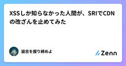
XSSしか知らなかった人間が、SRIでCDNの改ざんを止めてみた
Zennの「frontend」のフィード
ここ最近、情報漏洩が多すぎて、セキュリティを勉強しようと思いました。そこでブラウザ側でおもしろい対策方法を見つけました。SRI（Subresource Integrity：サブリソース完全性） です。CDN から読み込む <script> に integrity="sha384-..." を付けておくと、ファイルが書き換えられていたときにブラウザが読み込みを止めてくれる、というものです。（SRI は常識だろって思わないでください。ブラウザ側でできる対策は XSS 対策くらいしか知らんかったです）実際に手元で試してみました。 試したことローカルに「自分のサイト」（8...
3日前
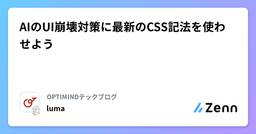
AIのUI崩壊対策に最新のCSS記法を使わせよう
Zennの「frontend」のフィード
AIがUI作ると崩れがちですよね。UIコンポーネント適当に組み合わせるだけならいいですが、ちょっと凝ったことをすると特に。そうしたコードで使われてるCSSって、結構古い書き方やハックを駆使しようとしていたりします。たとえば、以前は padding-top: 56.25% とか書いてましたが、 aspect-ratio: 16 / 9 使えたりとか。JSで頑張ってたところを、 position-anchor 使ったりとか。他にも、 @layer、@scope、clamp()、min() / max()、dvh / svh / lvh、scrollbar-gutter、overscro...
3日前
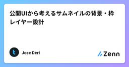
公開UIから考えるサムネイルの背景・枠レイヤー設計
Zennの「frontend」のフィード
公開UIから考えるサムネイルの背景・枠レイヤー設計公開されているUIを見ていると、背景と枠は「見た目の最後の調整」として扱われがちです。しかし状態設計の観点では、どちらも独立して復元・比較できる編集レイヤーです。本稿は公開UIの観察と一般的なUI設計をもとにしたアイデアメモです。内部実装やモデル、計測値を示すものではありません。 レイヤーごとの責務を分けるThumbnail Background Generator では、場面の説明、参考画像、スタイル、比率、バリエーションという入力が見える。ここから考えられる背景レイヤーの責務は「文脈をつくりつつ、前景の可読領域を残すこと...
3日前